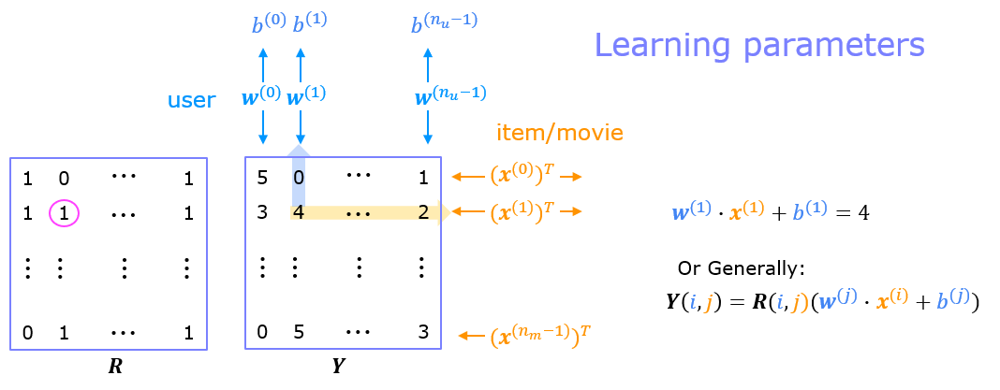
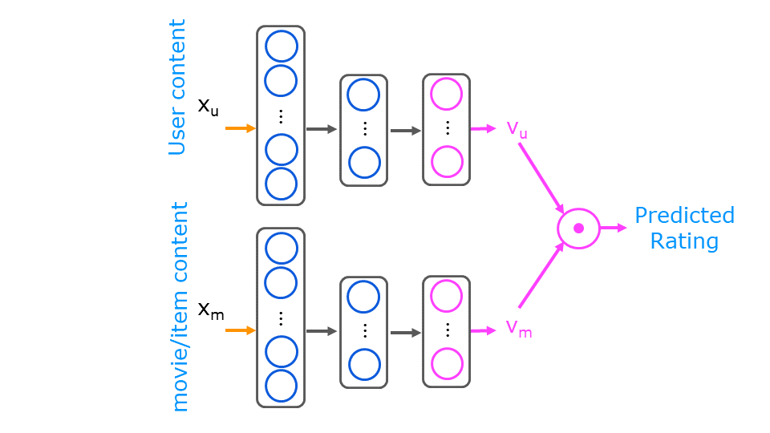

Hệ thống gợi ý
Netflix gợi ý phim, Shopee gợi ý sản phẩm, Spotify gợi ý bài hát. Hai cách tiếp cận: học từ hành vi của những người giống bạn, hoặc học từ đặc điểm của chính món hàng.
Bài toán và ký hiệu
Có \(n_u\) người dùng, \(n_m\) bộ phim. Người dùng chấm điểm 0.5–5 sao, nhưng mỗi người chỉ xem một phần nhỏ số phim.
| Ký hiệu | Ý nghĩa |
|---|---|
| \(r(i,j)\) | = 1 nếu người dùng \(j\) đã chấm phim \(i\) |
| \(y^{(i,j)}\) | điểm người dùng \(j\) cho phim \(i\) (nếu có) |
| \(\mathbf{w}^{(j)}, b^{(j)}\) | tham số của người dùng \(j\) |
| \(\mathbf{x}^{(i)}\) | vector đặc trưng của phim \(i\) |
Dự đoán điểm người dùng \(j\) cho phim \(i\): \(\;\mathbf{w}^{(j)}\cdot\mathbf{x}^{(i)} + b^{(j)}\).
Lab dùng dữ liệu MovieLens rút gọn: \(n_u = 443\) người dùng, \(n_m = 4778\) phim, ma trận \(\mathbf{Y}\) (\(n_m \times n_u\)) và ma trận chỉ báo \(\mathbf{R}\).
Collaborative filtering
Nếu đã biết đặc trưng phim \(\mathbf{x}^{(i)}\) (ví dụ mức độ “lãng mạn”, “hành động”), học \(\mathbf{w}^{(j)}\) chỉ là hồi quy tuyến tính cho từng người dùng. Nhưng ai gán sẵn những đặc trưng đó? Ý tưởng của collaborative filtering: học cả \(\mathbf{x}\) lẫn \(\mathbf{w}\) cùng lúc. Nhiều người dùng cùng chấm một phim → “hợp tác” để suy ra đặc trưng của phim đó.

Hàm chi phí mình viết trong lab (vòng lặp, rất sát công thức):
def cofi_cost_func(X, W, b, Y, R, lambda_):
nm, nu = Y.shape
J = 0
for i in range(nm): # mỗi phim
for j in range(nu): # mỗi người dùng
if R[i, j] == 1: # chỉ tính khi đã chấm
prediction = np.dot(X[i], W[j]) + b[0, j]
error = prediction - Y[i, j]
J += 0.5 * (error ** 2)
J += (lambda_ / 2) * np.sum(W ** 2)
J += (lambda_ / 2) * np.sum(X ** 2)
return JBản vector hoá dùng trong vòng huấn luyện (nhân với \(\mathbf{R}\) để bỏ qua ô chưa chấm):
def cofi_cost_func_v(X, W, b, Y, R, lambda_):
j = (tf.linalg.matmul(X, tf.transpose(W)) + b - Y) * R
J = 0.5 * tf.reduce_sum(j**2) + (lambda_ / 2) * (tf.reduce_sum(X**2) + tf.reduce_sum(W**2))
return JHuấn luyện với TensorFlow — vòng lặp tuỳ chỉnh
Đây không phải mô hình Sequential quen thuộc, nên ta tự viết vòng huấn luyện bằng GradientTape (autodiff, chương 10):
num_features = 100
W = tf.Variable(tf.random.normal((num_users, num_features), dtype=tf.float64), name='W')
X = tf.Variable(tf.random.normal((num_movies, num_features), dtype=tf.float64), name='X')
b = tf.Variable(tf.random.normal((1, num_users), dtype=tf.float64), name='b')
optimizer = keras.optimizers.Adam(learning_rate=1e-1)
for it in range(200):
with tf.GradientTape() as tape:
cost = cofi_cost_func_v(X, W, b, Ynorm, R, lambda_=1)
grads = tape.gradient(cost, [X, W, b])
optimizer.apply_gradients(zip(grads, [X, W, b]))Mean normalization
Với một người dùng mới chưa chấm phim nào, regularization đẩy \(\mathbf{w} \to 0\) → dự đoán mọi phim 0 sao. Giải pháp: trừ điểm trung bình \(\mu_i\) của mỗi phim trước khi huấn luyện, rồi cộng lại khi dự đoán:
Người dùng mới sẽ được gợi ý theo điểm trung bình của phim — hợp lý hơn nhiều. Trong lab, mình thêm điểm của chính mình cho vài phim (my_ratings) rồi xem mô hình gợi ý gì.
Tìm phim tương tự
Phim \(k\) tương tự phim \(i\) nếu đặc trưng học được gần nhau: \(\|\mathbf{x}^{(k)} - \mathbf{x}^{(i)}\|^2\) nhỏ.
Hạn chế
- Cold start: phim mới (chưa ai chấm) hoặc người dùng mới (chấm rất ít) khó gợi ý.
- Không tận dụng được thông tin phụ: thể loại, diễn viên, tuổi/quốc gia người dùng…
Content-based filtering với mạng nơ-ron
Gợi ý dựa trên đặc trưng của người dùng \(\mathbf{x}_u\) (tuổi, giới tính, quốc gia, điểm trung bình theo thể loại…) và của phim \(\mathbf{x}_m\) (năm, thể loại, điểm trung bình…). Hai mạng nơ-ron riêng biệt biến chúng thành hai vector cùng kích thước, rồi lấy tích vô hướng:

num_outputs = 32
user_NN = tf.keras.models.Sequential([
tf.keras.layers.Dense(256, activation='relu'),
tf.keras.layers.Dense(128, activation='relu'),
tf.keras.layers.Dense(num_outputs), # không activation
])
item_NN = tf.keras.models.Sequential([
tf.keras.layers.Dense(256, activation='relu'),
tf.keras.layers.Dense(128, activation='relu'),
tf.keras.layers.Dense(num_outputs),
])
input_user = tf.keras.layers.Input(shape=(num_user_features,))
vu = tf.linalg.l2_normalize(user_NN(input_user), axis=1)
input_item = tf.keras.layers.Input(shape=(num_item_features,))
vm = tf.linalg.l2_normalize(item_NN(input_item), axis=1)
output = tf.keras.layers.Dot(axes=1)([vu, vm]) # tích vô hướng = cosine similarity
model = tf.keras.Model([input_user, input_item], output)
model.compile(optimizer=keras.optimizers.Adam(learning_rate=0.01),
loss=tf.keras.losses.MeanSquaredError())Tìm phim tương tự: so sánh các vector \(\mathbf{v}_m\) bằng khoảng cách bình phương:
def sq_dist(a, b):
return np.sum((a - b) ** 2)Với hàng triệu sản phẩm, không thể chạy mạng cho mọi cặp người dùng–sản phẩm. Hệ thống thực tế làm hai bước:
- Retrieval: nhanh chóng lấy vài trăm ứng viên (phim tương tự phim vừa xem, top phim theo thể loại yêu thích, phim hot tại quốc gia…). Các \(\mathbf{v}_m\) có thể tính sẵn từ trước.
- Ranking: chạy mô hình đầy đủ trên các ứng viên đó và sắp xếp.
- Collaborative filtering chính là phân tích ma trận (matrix factorization): \(\mathbf{Y} \approx \mathbf{X}\mathbf{W}^\top\) — thuật toán nổi tiếng từ cuộc thi Netflix Prize (2006–2009).
- Phản hồi ngầm (implicit feedback): thay vì điểm sao, dùng click, thời gian xem, thêm vào giỏ hàng. Nhãn nhị phân → thay hồi quy bằng logistic (dự đoán xác suất người dùng tương tác).
- Đánh giá: ngoài MSE, dùng các thước đo xếp hạng như Precision@K, Recall@K, NDCG.
- Vector database & ANN search (FAISS, ScaNN): tìm láng giềng gần nhất trong hàng tỉ vector — nền tảng của retrieval và của RAG trong ứng dụng LLM.
- Đạo đức: tối ưu thuần “tương tác” có thể đẩy nội dung giật gân, tạo “bong bóng lọc”. Andrew Ng khuyến khích minh bạch với người dùng và cân nhắc lợi ích lâu dài của họ.
- C3_W2 Practice Lab — Collaborative Filtering (graded:
cofi_cost_func) - C3_W2 Practice Lab — Content-based Filtering với mạng nơ-ron (graded:
user_NN/item_NN,sq_dist)
Đi từng bước qua lab
Collaborative filtering
- Nạp dữ liệu: \(\mathbf{Y}\) và \(\mathbf{R}\) shape (4778, 443); \(\mathbf{X}, \mathbf{W}, \mathbf{b}\) đã huấn luyện sẵn để kiểm tra hàm chi phí.
- Viết
cofi_cost_func(hai vòng lặp, chỉ cộng khiR[i, j] == 1). Trên bộ dữ liệu thu nhỏ (4 user, 5 phim, 3 đặc trưng): chi phí 13.67 khi λ = 0 và 28.09 khi λ = 1.5. - Thêm điểm của chính mình vào
my_ratings(ví dụ Toy Story 3 = 5, Shrek = 5…), rồi ghép vào \(\mathbf{Y}, \mathbf{R}\). - Mean normalization bằng
normalizeRatings(Y, R)→Ynorm, Ymean. - Huấn luyện bằng vòng lặp tuỳ chỉnh với
GradientTape, Adam (lr = 0.1), λ = 1, 200 vòng; chi phí in ra mỗi 20 vòng. - Dự đoán \(\mathbf{X}\mathbf{W}^\top + \mathbf{b} + \mu\), sắp xếp và in 17 phim có điểm dự đoán cao nhất cho mình, cạnh điểm thật của những phim mình đã chấm.
Content-based filtering
- Chuẩn bị dữ liệu: đặc trưng user (điểm trung bình theo thể loại), đặc trưng phim (năm, điểm trung bình, thể loại one-hot); chuẩn hoá bằng
StandardScaler, nhãn đưa về [−1, 1] bằngMinMaxScaler. - Chia 80/20 bằng
train_test_splitvới cùngrandom_statecho user, item và y để các dòng khớp nhau. - Hai tháp 256 → 128 → 32, chuẩn hoá L2 đầu ra, ghép bằng
Dot; huấn luyện 30 epoch với MSE. - Dự đoán cho user mới chỉ từ sở thích thể loại khai báo, và cho user cũ đã có trong dữ liệu.
- Tìm phim tương tự: tính \(\mathbf{v}_m\) cho mọi phim, ma trận khoảng cách bằng
sq_dist, lấy phim gần nhất (bỏ chính nó).
Một sàn có 10 triệu người dùng và 5 triệu sản phẩm. Họ kết hợp cả hai kỹ thuật trong chương:
- Retrieval: tháp sản phẩm tính sẵn \(\mathbf{v}_m\) cho mọi sản phẩm mỗi đêm; khi user mở app, tháp user tính \(\mathbf{v}_u\) và một chỉ mục vector (ANN) lấy ra ~500 sản phẩm gần nhất trong vài mili-giây.
- Ranking: một mô hình nặng hơn (thêm giá, khuyến mãi, lịch sử click gần đây) xếp hạng 500 ứng viên đó.
- Cold start: sản phẩm mới chưa có lượt mua vẫn có \(\mathbf{v}_m\) nhờ đặc trưng nội dung (danh mục, mô tả, ảnh), nên vẫn được gợi ý ngay ngày đầu.
Nhãn thường là phản hồi ngầm (click, thêm vào giỏ, mua) thay vì điểm sao, nên bài toán trở thành phân loại nhị phân như ghi chú Notion “Binary label”.
Từ ghi chú Notion
Một biến thể mình ghi lại: thay vì đặc trưng thủ công, mỗi user và mỗi phim có một vector embedding học được, ghép lại rồi đưa qua các lớp Dense để dự đoán rating.
from tensorflow.keras.layers import Input, Embedding, Flatten, Dense, Concatenate
num_users, num_movies, embedding_dim = 1000, 2000, 50
user_input = Input(shape=(1,))
movie_input = Input(shape=(1,))
user_vec = Flatten()(Embedding(num_users, embedding_dim)(user_input))
movie_vec = Flatten()(Embedding(num_movies, embedding_dim)(movie_input))
x = Concatenate()([user_vec, movie_vec])
x = Dense(128, activation='relu')(x)
x = Dense(64, activation='relu')(x)
x = Dense(32, activation='relu')(x)
output = Dense(1, activation='linear')(x) # rating dự đoán
model = keras.Model(inputs=[user_input, movie_input], outputs=output)
model.compile(loss='mse', optimizer='adam')
model.fit([user_ids, movie_ids], ratings, epochs=10, batch_size=32, validation_split=0.2)Các chủ đề khác trong ghi chú: nhãn nhị phân (thích/không, click/không), mean normalization, custom training loop với GradientTape, tìm phim liên quan và gợi ý cho danh mục lớn (retrieval rồi ranking).
Nguồn Notion: Recommendation system
Ghi nhớ
- Collaborative filtering học đồng thời đặc trưng phim \(\mathbf{x}\) và tham số người dùng \(\mathbf{w}, b\), chỉ tính lỗi trên ô có \(r(i,j)=1\).
- Mean normalization giúp người dùng mới nhận gợi ý hợp lý.
- Content-based: hai mạng nơ-ron tạo \(\mathbf{v}_u, \mathbf{v}_m\); dự đoán = \(\mathbf{v}_u\cdot\mathbf{v}_m\); giải quyết cold start nhờ đặc trưng.
Tự kiểm tra
Vì sao không regularize b trong collaborative filtering?
Giống các chương trước: b chỉ dịch chuyển dự đoán, không làm mô hình “phức tạp” hơn; regularize hay không ảnh hưởng rất ít. Lab chỉ regularize X và W.
Phim mới ra mắt, chưa ai chấm. Cách nào gợi ý được?
Content-based filtering: dùng đặc trưng của phim (thể loại, năm, diễn viên…) để tính \(\mathbf{v}_m\) ngay lập tức.